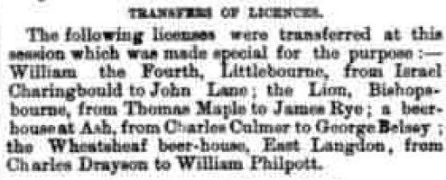
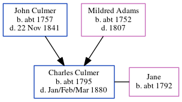

Charles Culmer c1795 - 1880
[ Home ] | [ Calendar ] | [ Surnames Index ] | [ Errors ] | [ Family History ]A gardener and the child of John Culmer (a labourer) and Mildred Adams, Charles Culmer, the fifth times great-uncle of Nigel Horne, was born in Stourmouth, Kent, England c. 17951,2,3,4,5 and baptised there on 8 Nov 1795. He was married to Jane.
During his life, he was living at Lower Street in Stourmouth on 6 Jun 18416; at his birthplace in 18512 (the same place as his father had been living on 6 Jun 1841); at Lower Street in Stourmouth on 7 Apr 18617; and in Ash, Kent, England in 18714.
He died in Jan/Feb/Mar 1880 in Eastry, Kent, England5.
Parents
- John was born c. 1757
- Mildred was born c. 1752
Citations
- 1841 England Census Online publication - Provo, UT, USA: The Generations Network, Inc., 2006.Original data - Census Returns of England and Wales, 1841. Kew, Surrey, England: The National Archives of the UK (TNA): Public Record Office (PRO), 1841. Data imaged from the National
- 1851 England Census Online publication - Provo, UT, USA: The Generations Network, Inc., 2005.Original data - Census Returns of England and Wales, 1851. Kew, Surrey, England: The National Archives of the UK (TNA): Public Record Office (PRO), 1851. Data imaged from the National
- 1861 England Census Online publication - Provo, UT, USA: The Generations Network, Inc., 2005.Original data - Census Returns of England and Wales, 1861. Kew, Surrey, England: The National Archives of the UK (TNA): Public Record Office (PRO), 1861. Data imaged from the National
- 1871 England Census Online publication - Provo, UT, USA: The Generations Network, Inc., 2004.Original data - Census Returns of England and Wales, 1871. Kew, Surrey, England: The National Archives of the UK (TNA): Public Record Office (PRO), 1871. Data imaged from the National
- England & Wales, FreeBMD Death Index: 1837-1915 Online publication - Provo, UT, USA: The Generations Network, Inc., 2006.Original data - General Register Office. England and Wales Civil Registration Indexes. London, England: General Register Office. © Crown copyright. Published by permission of the Cont
- 1841 England, Wales & Scotland Census - Findmypast (was age 45)
- 1861 England, Wales & Scotland Census - Findmypast (was age 64 and the head of the household)
Media
Dover Express - 14 Nov 1873

1841 England, Wales & Scotland Census - GBC/1841/0013980975
1861 England, Wales & Scotland Census - GBC/1861/0003565799
Family Tree
Map
Generated by ged2site. Last updated on Jul 3, 2024